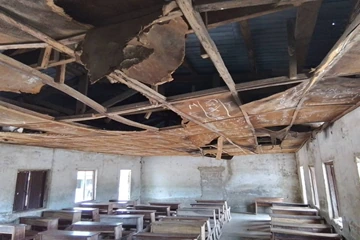

Borgu, Niger State
Education outreach
What we do
Our programmes

Education support
Helping students access learning materials, prepare for exams and study in better-equipped classrooms.

Community healthcare
Bringing preventive care, health information and basic services closer to underserved communities.

Community development
Working with residents on clean water, shared facilities and practical support for families.

New Bussa, Niger StateProject spotlight
A better place
to learn
Government Technical College in New Bussa needs repairs to its classrooms and administrative block. The foundation is seeking support for both projects.
Explore project appealsFrom the field
Community life in pictures


Get involved
Work with the foundation
Contribute your time, professional skills or resources to a community programme.